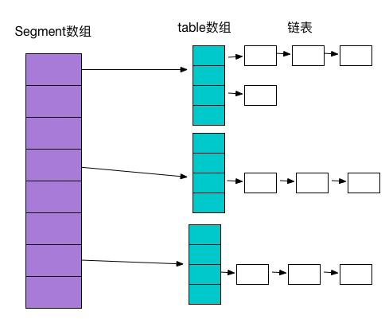

ConcurrentHashMap为了高并发而设计，相比于HashTable和HashMap有更多优势。HashTable是同步的，在多线程环境下，能保证程序执行的正确性，每次同步执行的时候都要锁住整个结构。HashMap不是同步的，在单线程情况下效率高。
ConcurrentHashMap锁方式是稍微细粒度的，内部采用分离锁的设计。它默认将Hash表分为16个分段，get，put，remove等常用操作只锁当前需要用到的分段。对于每个Segment，采用final和volatile关键字。
concurrenthashmap采用了二次hash的方式，第一次hash将key映射到对应的segment，而第二次hash则是映射到segment的不同桶中。
原来只能一个线程进入，现在却能同时16个写线程进入，写线程需要锁定，读线程几乎不受限制，并发性是显而易见的。只有size等操作才需要锁定整个表。
定义 ConcurrentHashMap继承AbstractMap，实现了ConcurrentMap,Serializable接口。ConcurrentMap继承了Map，添加了一些原子性方法，如putIfAbsent，remove，replace等。
数据结构 ConcurrentHashMap是由Segment数组结构，HashEntry数组结构和链表组成。Segment是可重入锁ReentrantLock，扮演锁角色。每个Segment的结构和HashMap类似，数组加链表存储结构。
HashEntry的key，hash采用final，可以避免并发修改问题，HashEntry链的尾部是不能修改的，而next和value采用volatile，可以避免使用同步造成的并发性能灾难。

Segment<K,V> Segment是ConcurrentHashMap的内部类，继承ReentrantLock，实现了Serializable接口。操作基本上都在Segment上，Segment中的table是一个HashEntry数组，数据就存放到这个数组中。看到这里对比下HashMap的存储结构，就大概能明白。具体方法在接下来的ConcurrentHashMap的具体方法中讲解。
初始化 ConcurrentHashMap初始化是通过initialCapacity，loadFactor，concurrencyLevel等参数来初始化Segment数组，段偏移量segmentShift，段掩码segmentMask和每个segment里的HashEntry数组。
1 2 3 4 5 6 7 8 9 10 11 12 13 14 15 16 17 18 19 20 21 22 23 24 25 26 27 28 29 30 31 32 33 public ConcurrentHashMap(int initialCapacity, float loadFactor, int concurrencyLevel) { //校验参数 if (!(loadFactor > 0) || initialCapacity < 0 || concurrencyLevel <= 0) throw new IllegalArgumentException(); //并发级别数大于最大Segment数量 if (concurrencyLevel > MAX_SEGMENTS) concurrencyLevel = MAX_SEGMENTS; // Find power-of-two sizes best matching arguments int sshift = 0; int ssize = 1; while (ssize < concurrencyLevel) { ++sshift; ssize <<= 1; } this.segmentShift = 32 - sshift; this.segmentMask = ssize - 1; if (initialCapacity > MAXIMUM_CAPACITY) initialCapacity = MAXIMUM_CAPACITY; int c = initialCapacity / ssize; if (c * ssize < initialCapacity) ++c; int cap = MIN_SEGMENT_TABLE_CAPACITY; while (cap < c) cap <<= 1; // create segments and segments[0] Segment<K,V> s0 = new Segment<K,V>(loadFactor, (int)(cap * loadFactor), (HashEntry<K,V>[])new HashEntry[cap]); Segment<K,V>[] ss = (Segment<K,V>[])new Segment[ssize]; UNSAFE.putOrderedObject(ss, SBASE, s0); // ordered write of segments[0] this.segments = ss; }
segments数组的长度ssize通过concurrencyLevel计算得出。为了能通过按位与的哈希算法来定位segments数组的索引，必须保证segments数组的长度是2的N次方（power-of-two size），所以必须计算出一个是大于或等于concurrencyLevel的最小的2的N次方值来作为segments数组的长度。假如concurrencyLevel等于14，15或16，ssize都会等于16，即容器里锁的个数也是16。注意concurrencyLevel的最大大小是65535，意味着segments数组的长度最大为65536，对应的二进制是16位。
初始化segmentShift和segmentMask。
初始化每个Segment。输入参数initialCapacity是ConcurrentHashMap的初始化容量，loadfactor是每个segment的负载因子，在构造方法里需要通过这两个参数来初始化数组中的每个segment。
变量cap就是segment里HashEntry数组的长度，它等于initialCapacity除以ssize的倍数c，如果c大于1，就会取大于等于c的2的N次方值，所以cap不是1，就是2的N次方。segment的容量threshold＝(int)cap*loadFactor，默认情况下initialCapacity等于16，loadfactor等于0.75，通过运算cap等于1，threshold等于零。
put(key,value)方法 1 2 3 4 5 6 7 8 9 10 11 12 13 14 15 public V put(K key, V value) { Segment<K,V> s; if (value == null) throw new NullPointerException(); //计算key的哈希值 int hash = hash(key); //定位segment需要用到这个计算的数值 int j = (hash >>> segmentShift) & segmentMask; if ((s = (Segment<K,V>)UNSAFE.getObject // nonvolatile; recheck (segments, (j << SSHIFT) + SBASE)) == null) // in ensureSegment //获取指定segment，若不存在新建一个，并记录在Segment数组中 s = ensureSegment(j); //put方法，在Segment内部类中实现 return s.put(key, hash, value, false); }
Segment内部类中的put方法：
1 2 3 4 5 6 7 8 9 10 11 12 13 14 15 16 17 18 19 20 21 22 23 24 25 26 27 28 29 30 31 32 33 34 35 36 37 38 39 40 41 42 43 44 45 46 final V put(K key, int hash, V value, boolean onlyIfAbsent) { //tryLock(): 如果锁可用, 则获取锁, 并立即返回true, 否则返回false。 //该方法和lock()的区别在于, tryLock()只是"试图"获取锁, 如果锁不可用, 不会导致当前线程被禁用, 当前线程仍然继续往下执行代码。而lock()方法则是一定要获取到锁, 如果锁不可用, 就一直等待, 在未获得锁之前,当前线程并不继续向下执行。 //scanAndLockForPut扫描指定key的节点，并获取锁，如果不存在就新建一个HashEntry HashEntry<K,V> node = tryLock() ? null : scanAndLockForPut(key, hash, value); V oldValue; try { HashEntry<K,V>[] tab = table; int index = (tab.length - 1) & hash; HashEntry<K,V> first = entryAt(tab, index); for (HashEntry<K,V> e = first;;) { if (e != null) { K k; if ((k = e.key) == key || (e.hash == hash && key.equals(k))) { oldValue = e.value; if (!onlyIfAbsent) { e.value = value; ++modCount; } break; } e = e.next; } else { if (node != null) node.setNext(first); else node = new HashEntry<K,V>(hash, key, value, first); int c = count + 1; if (c > threshold && tab.length < MAXIMUM_CAPACITY) rehash(node); else setEntryAt(tab, index, node); ++modCount; count = c; oldValue = null; break; } } } finally { unlock(); } return oldValue; }
put操作开始，首先定位到Segment，为了线程安全，锁定当前Segment；然后在Segment里进行插入操作，首先判断是否需要扩容，然后在定位添加元素的位置放在HashEntry数组里。
扩容：在插入元素前会先判断Segment里的HashEntry数组是否超过容量（threshold），如果超过阀值，数组进行扩容。值得一提的是，Segment的扩容判断比HashMap更恰当，因为HashMap是在插入元素后判断元素是否已经到达容量的，如果到达了就进行扩容，但是很有可能扩容之后没有新元素插入，这时HashMap就进行了一次无效的扩容。
扩容的时候首先会创建一个两倍于原容量的数组，然后将原数组里的元素进行再hash后插入到新的数组里。为了高效ConcurrentHashMap不会对整个容器进行扩容，而只对某个segment进行扩容。
get(key)方法 1 2 3 4 5 6 7 8 9 10 11 12 13 14 15 16 17 public V get(Object key) { Segment<K,V> s; // manually integrate access methods to reduce overhead HashEntry<K,V>[] tab; int h = hash(key); long u = (((h >>> segmentShift) & segmentMask) << SSHIFT) + SBASE; if ((s = (Segment<K,V>)UNSAFE.getObjectVolatile(segments, u)) != null && (tab = s.table) != null) { for (HashEntry<K,V> e = (HashEntry<K,V>) UNSAFE.getObjectVolatile (tab, ((long)(((tab.length - 1) & h)) << TSHIFT) + TBASE); e != null; e = e.next) { K k; if ((k = e.key) == key || (e.hash == h && key.equals(k))) return e.value; } } return null; }
size()方法 我们要统计整个ConcurrentHashMap里元素的大小，就必须统计所有Segment里元素的大小后求和。Segment里的全局变量count是一个volatile变量，那么在多线程场景下，我们是不是直接把所有Segment的count相加就可以得到整个ConcurrentHashMap大小了呢？不是的，虽然相加时可以获取每个Segment的count的最新值，但是拿到之后可能累加前使用的count发生了变化，那么统计结果就不准了。所以最安全的做法，是在统计size的时候把所有Segment的put，remove和clean方法全部锁住，但是这种做法显然非常低效。
因为在累加count操作过程中，之前累加过的count发生变化的几率非常小，所以ConcurrentHashMap的做法是先尝试2次通过不锁住Segment的方式来统计各个Segment大小，如果统计的过程中，容器的count发生了变化，则再采用加锁的方式来统计所有Segment的大小。
迭代 ConcurrentHashMap使用了不同于传统集合的快速失败迭代器的另一种迭代方式，我们称为弱一致迭代器。在这种迭代方式中，当iterator被创建后集合再发生改变就不再是抛出 ConcurrentModificationException，取而代之的是在改变时new新的数据从而不影响原有的数 据，iterator完成后再将头指针替换为新的数据，这样iterator线程可以使用原来老的数据，而写线程也可以并发的完成改变，更重要的，这保证了多个线程并发执行的连续性和扩展性，是性能提升的关键。
源码分析
jdk1.7.0_71
1 2 3 4 5 6 7 8 9 10 11 12 13 14 15 16 17 18 19 20 21 22 23 24 25 26 27 28 //默认容量 static final int DEFAULT_INITIAL_CAPACITY = 16; //默认负载因子 static final float DEFAULT_LOAD_FACTOR = 0.75f; //并发级别 static final int DEFAULT_CONCURRENCY_LEVEL = 16; //最大容量 static final int MAXIMUM_CAPACITY = 1 << 30; //每个segment最小容量 static final int MIN_SEGMENT_TABLE_CAPACITY = 2; //最大segment数量 static final int MAX_SEGMENTS = 1 << 16; //lock之前尝试的次数 static final int RETRIES_BEFORE_LOCK = 2; //计算哈希值时候用到 private transient final int hashSeed = randomHashSeed(this); //segment的掩码值,用于计算key所在segments索引值 final int segmentMask; //segment的偏移值,用于计算key所在segments索引值 final int segmentShift; //segment数组,其内部是由HashEntry数组实现,正因为有了多个segment，才提高了并发度 final Segment<K,V>[] segments; // transient Set<K> keySet; // transient Set<Map.Entry<K,V>> entrySet; // transient Collection<V> values;
Holder 静态内部类,存放一些在虚拟机启动后才能初始化的值 容量阈值，初始化hashSeed的时候会用到该值 1 static final int ALTERNATIVE_HASHING;
static静态块 1 获取系统变量jdk.map.althashing.threshold
ConcurrentHashMap(int initialCapacity,float loadFactor, int concurrencyLevel) 构造
传入的参数有initialCapacity，loadFactor，concurrencyLevel这三个。
initialCapacity表示新创建的这个ConcurrentHashMap的初始容量，也就是上面的结构图中的Entry数量。默认值为static final int DEFAULT_INITIAL_CAPACITY = 16;
loadFactor表示负载因子，就是当ConcurrentHashMap中的元素个数大于loadFactor * 最大容量时就需要rehash，扩容。默认值为static final float DEFAULT_LOAD_FACTOR = 0.75f;
concurrencyLevel表示并发级别，这个值用来确定Segment的个数，Segment的个数是大于等于concurrencyLevel的第一个2的n次方的数。比如，如果concurrencyLevel为12，13，14，15，16这些数，则Segment的数目为16(2的4次方)。默认值为static final int DEFAULT_CONCURRENCY_LEVEL = 16;。理想情况下ConcurrentHashMap的真正的并发访问量能够达到concurrencyLevel，因为有concurrencyLevel个Segment，假如有concurrencyLevel个线程需要访问Map，并且需要访问的数据都恰好分别落在不同的Segment中，则这些线程能够无竞争地自由访问（因为他们不需要竞争同一把锁），达到同时访问的效果。这也是为什么这个参数起名为“并发级别”的原因。
初始化的一些动作：
验证参数的合法性，如果不合法，直接抛出异常。
concurrencyLevel也就是Segment的个数不能超过规定的最大Segment的个数，默认值为static final int MAX_SEGMENTS = 1 << 16;，如果超过这个值，设置为这个值。
然后使用循环找到大于等于concurrencyLevel的第一个2的n次方的数ssize，这个数就是Segment数组的大小，并记录一共向左按位移动的次数sshift，并令segmentShift = 32 - sshift，并且segmentMask的值等于ssize - 1，segmentMask的各个二进制位都为1，目的是之后可以通过key的hash值与这个值做&运算确定Segment的索引。
检查给的容量值是否大于允许的最大容量值，如果大于该值，设置为该值。最大容量值为static final int MAXIMUM_CAPACITY = 1 << 30;。
然后计算每个Segment平均应该放置多少个元素，这个值c是向上取整的值。比如初始容量为15，Segment个数为4，则每个Segment平均需要放置4个元素。
最后创建一个Segment实例，将其当做Segment数组的第一个元素。
1 2 3 4 5 6 7 8 9 10 11 12 13 14 15 16 17 18 19 20 21 22 23 24 25 26 27 28 if (!(loadFactor > 0) || initialCapacity < 0 || concurrencyLevel <= 0) throw new IllegalArgumentException(); if (concurrencyLevel > MAX_SEGMENTS) concurrencyLevel = MAX_SEGMENTS; // Find power-of-two sizes best matching arguments int sshift = 0; int ssize = 1; while (ssize < concurrencyLevel) { ++sshift; ssize <<= 1; } this.segmentShift = 32 - sshift; this.segmentMask = ssize - 1; if (initialCapacity > MAXIMUM_CAPACITY) initialCapacity = MAXIMUM_CAPACITY; int c = initialCapacity / ssize; if (c * ssize < initialCapacity) ++c; int cap = MIN_SEGMENT_TABLE_CAPACITY; while (cap < c) cap <<= 1; // create segments and segments[0] Segment<K,V> s0 = new Segment<K,V>(loadFactor, (int)(cap * loadFactor), (HashEntry<K,V>[])new HashEntry[cap]); Segment<K,V>[] ss = (Segment<K,V>[])new Segment[ssize]; UNSAFE.putOrderedObject(ss, SBASE, s0); // ordered write of segments[0] this.segments = ss;
ConcurrentHashMap(int initialCapacity, float loadFactor) 指定初始容量和负载因子 1 2 3 public ConcurrentHashMap(int initialCapacity, float loadFactor) { this(initialCapacity, loadFactor, DEFAULT_CONCURRENCY_LEVEL); }
ConcurrentHashMap(int initialCapacity) 指定初始容量 1 2 3 public ConcurrentHashMap(int initialCapacity) { this(initialCapacity, DEFAULT_LOAD_FACTOR, DEFAULT_CONCURRENCY_LEVEL); }
ConcurrentHashMap(int initialCapacity) 空构造 1 2 3 public ConcurrentHashMap() { this(DEFAULT_INITIAL_CAPACITY, DEFAULT_LOAD_FACTOR, DEFAULT_CONCURRENCY_LEVEL); }
ConcurrentHashMap(Map<? extends K, ? extends V> m) 使用map初始化 1 public ConcurrentHashMap(Map<? extends K, ? extends V> m) {}
isEmpty() 是否为空 1 2 //为了避免错误统计,会把每个segment的modCount都加起来进行判断 public boolean isEmpty() {}
size() 返回大小 get(Object key) 根据key获取value 1 public V get(Object key) {}
containsKey(Object key) 是否包含key 1 public boolean containsKey(Object key) {}
containsValue(Object value) 是否包含value 1 2 //思路和size()相同 public boolean containsValue(Object value){}
put(K key, V value) 1 public V put(K key, V value) {}
putIfAbsent(K key, V value) 如果不存在对应的key,就放进去 1 public V putIfAbsent(K key, V value) {}
putAll(Map<? extends K, ? extends V> m) 把指定map放进去 1 public void putAll(Map<? extends K, ? extends V> m){}
remove(Object key) 删除 1 public V remove(Object key){}
remove(Object key, Object value)删除 1 public boolean remove(Object key, Object value){}
replace(K key, V oldValue, V newValue) 替换 1 public boolean replace(K key, V oldValue, V newValue) {}
replace(K key, V value) 替换 1 public V replace(K key, V value){}
clear() 清空 Segment<K,V> (–重要–) 1 2 3 4 5 6 7 8 9 10 11 12 //最大的尝试加锁的次数 static final int MAX_SCAN_RETRIES =Runtime.getRuntime().availableProcessors() > 1 ? 64 : 1; //每个segment存放数据的table transient volatile HashEntry<K,V>[] table; //segment元素的数量 transient int count; //segment的修改数 transient int modCount; //扩容的临界值 transient int threshold; //负载因子 final float loadFactor;
put(K key, int hash, V value, boolean onlyIfAbsent) 1 2 3 4 5 final V put(K key, int hash, V value, boolean onlyIfAbsent) { //加锁 //修改 //解锁 }
参考 http://my.oschina.net/indestiny/blog/209458
http://qifuguang.me/2015/09/10/[Java%E5%B9%B6%E5%8F%91%E5%8C%85%E5%AD%A6%E4%B9%A0%E5%85%AB]%E6%B7%B1%E5%BA%A6%E5%89%96%E6%9E%90ConcurrentHashMap/
http://www.importnew.com/20952.html
http://www.importnew.com/16147.html